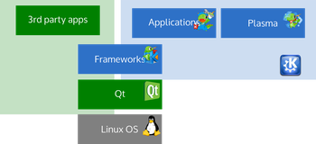

KDE Komponenten
Dieser Artikel wurde für die folgenden Ubuntu-Versionen getestet:
Ubuntu 16.04 Xenial Xerus
Zum Verständnis dieses Artikels sind folgende Seiten hilfreich:
Die KDE Community: veröffentlicht eine Vielzahl von Anwendungen, eine der zentralen Komponenten ist z.B. der Desktop KDE Plasma. Diese Anwendungen wurden früher in der KDE Software Compilation zusammen gefasst. Während der KDE Portierung auf die neue Generation der Bibliothek Qt in der Version 5 wurde die Softwaresammlung in verschiedene Komponenten neu aufgeteilt. Diese Anwendungen bzw. die Komponenten der KDE Community werden auch in weiten Teilen unter Kubuntu eingesetzt.
KDE Komponenten¶
KDE Frameworks¶
|  |
| Die grundlegende Architektur Bildquelle: Jos Poortvliet CC-BY-SA 3.0 |
Die Basis von KDE bilden die KDE Frameworks (kurz KF5) als modulare Ergänzung der Qt-Bibliothek. Diese ersetzt die frühere monolithische Bibliothek kde4libs und soll eine einfachere Portierung von KDE Software auf andere Plattformen, sowie den Einsatz außerhalb einer homogenen KDE-Umgebung erleichtern.
Die erste Version von KF5 wurde im Juli 2014 veröffentlicht. Seitdem werden monatliche neue Entwicklungsstände veröffentlicht.
KDE Plasma¶
Plasma ist die Desktopumgebung der KDE Community. Die Desktop Shell ist modular aufgebaut und besteht fast vollständig aus Miniprogrammen (oder Widgets, Applets, Plasmoids).
Eine Besonderheit ist hierbei, dass es manche Miniprogramme gibt, welche weitere Miniprogramme aufnehmen können. Zum Beispiel können die Arbeitsfläche und die Kontrollleiste Miniprogramme aufnehmen.
Auf der Arbeitsfläche können die Miniprogramme frei bewegt, skaliert und rotiert werden. In der Kontrollleiste wird die Größe durch diese bestimmt. Eine weitere Stärke dieser Modularität ist, dass auch das Verhalten und Aussehen der Miniprogramme bestimmt werden kann. So wird z.B. in der Kontrollleiste nur ein Icon angezeigt, welches durch einen Klick das eigentliche Miniprogramm öffnet. Auf der Arbeitsfläche wird jedoch direkt das Miniprogramm ohne Icon angezeigt.
Zusammen mit der Plasma-Arbeitsfläche werden einige grundlegende Programme wie die KDE-Systemeinstellungen, das KInfoCenter, Klipper etc. herausgegeben.
Die erste Version von Plasma 5 wurde im Juli 2014 veröffentlicht. Seitdem werden alle drei Monate eine neue Version von Plasma herausgegeben.
KDE Applications¶
Alle Programme, die keine eigenen Releasezyklen haben, wurden in den sogenannten KDE Applications zusammen gefasst, die nun alle vier Monate veröffentlicht werden. Die Versionsnummern entsprechen dabei den Jahres- und Monatszahlen des Veröffentlichungsdatums – ein beispielsweise von Ubuntu bekanntes Schema. Zu beachten ist, dass darunter auch Programme sind, die (noch) nicht auf KF5 portiert wurden.
Die erste Version der neuen KDE Applications Softwaresammlung erschien im Dezember 2014, folglich mit der Version 14.12.
Weitere Programme¶
Einige Programme werden weiterhin außerhalb der KDE Struktur entwickelt, sind aber durch die verwendeten Bibliotheken eng an das KDE Projekt angeschossen. Beispiele für solche Programme sind Calligra oder Digikam.
Kubuntu¶
Kubuntu stellt als Distributor die verschiedenen KDE Komponenten zusammen. Im Rahmen der Entwicklung von Ubuntu werden die Bestandteile paketiert und anschließend stabilisiert. Nach der Veröffentlichung einer Kubuntu-Version werden keine Aktualisierungen von KF5, Plasma oder den Applications mehr zugelassen. Lediglich Fehlerbehebungen und so genannte Minorupdates, die keine neuen Funktionen einführen, werden über die Updates nachgereicht.
Kubuntu 16.04 enthält beispielsweise die KDE Frameworks 5.18, Plasma 5.5 und Applications 15.12.
 - Offizielle Kubuntu Homepage
- Offizielle Kubuntu Homepage- Erstellt mit Inyoka
-
 2004 – 2017 ubuntuusers.de • Einige Rechte vorbehalten
2004 – 2017 ubuntuusers.de • Einige Rechte vorbehalten
Lizenz • Kontakt • Datenschutz • Impressum • Serverstatus -
Serverhousing gespendet von